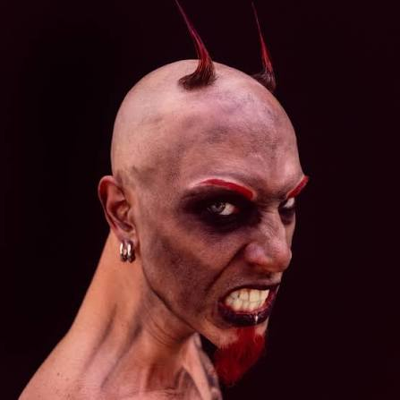

Estudante universitário
Olá, sou o Martim
Estudo Computação Criativa e Realidade Virtual e gosto de desenvolvimento de jogos
Ver o meu currículo
Sobre mim
Sou estudante do primeiro ano e tenho interesse em programação, design de interfaces e tecnologia. Nos tempos livres gosto de tocar instrumentos e programar pequenos jogos. Esta página é um dos meus primeiros trabalhos em HTML e CSS.
Currículo
Educação
2026 — Presente
Licenciatura em Computação Criativa e Realidade Virtual
UBI - Universidade da Beira Interior
2023 — 2026
Ensino Secundário — Ciências e Tecnologias
Escola Secundária Amato Lusitano - Castelo Branco
Competências
- HTML
- CSS
- Javascript (Básico)
- p5*js
- Adobe Illustrator e Photoshop (Básico)
- Edição de imagens e modelação 3D em Blockbench
- Blender (Básico)
- FL Studio 20 (avançado)
- Trabalho em equipa
- Inglês (Fluente)
- Espanhol (Básico)